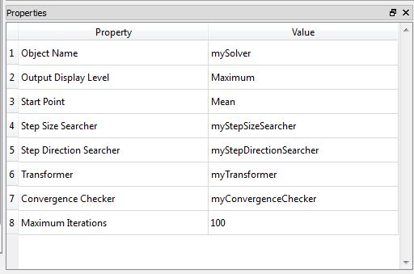

Stepper Nonlinear Single Constraint Solver
Class Name
- RStepperNonlinSingleConstrSolver
Location in Objects Pane
- Methods > Nonlinear Single Constraint Solver > Stepper
Properties

Object Name
- Name of the object in Rt
- Allowable characters are upper-case and lower-case letters, numbers, and underscore (“_”).
- The name is unique and case-sensitive.
Output Display Level
- Determines the level of messages and outputs of this object to print in the Output Pane.
- The more the level of outputs, the more time it takes to run the analysis.
Start Point
- a drop-down list of start point including mean, origin and current value
Step Size Searcher
- List of defined step size searchers
- Step size searcher object itself is defined either as Fixed or Armijo.
Step Direction Searcher
- List of defined step size searchers
- Indicates the transformer object which transforms random variables in original space to the standard normal space or vice versa.
- Transformer object itself is defined as No Correlation Transformer (for cases in which there's no correlation between random variables) or as Nataf Transformer.
Convergence Checker
- List of defined convergence checkers
Maximum Iterations
- Determines the maximum number of iterations checking convergence criteria.
Output
- This object searches for the design point.
Right-click Menu
Remove